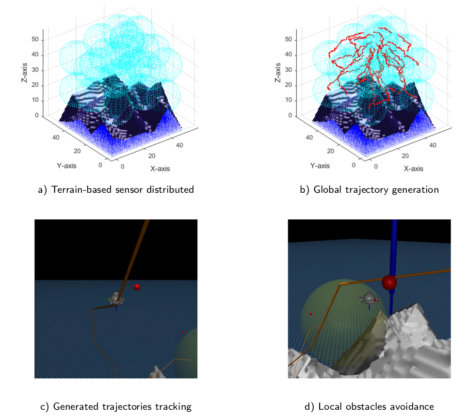
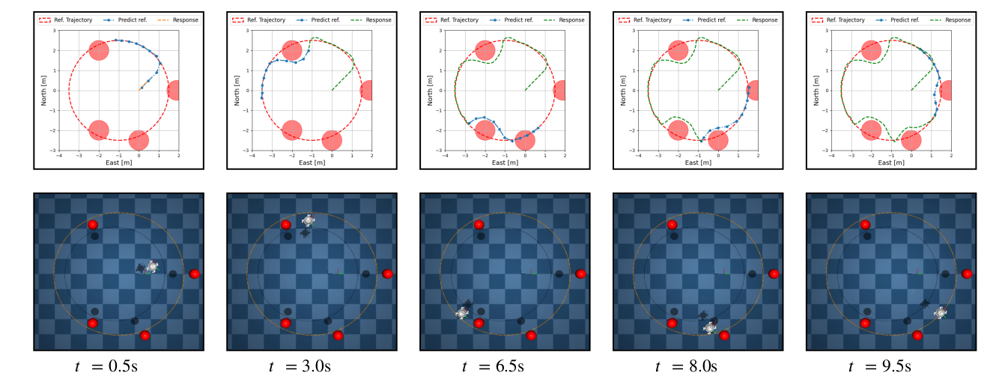
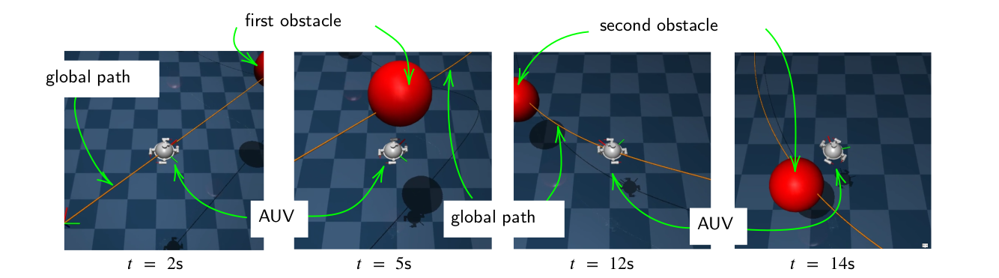
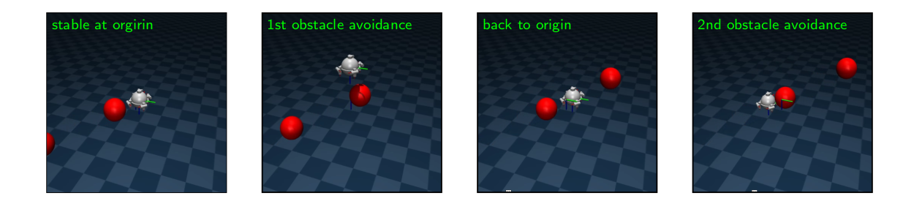
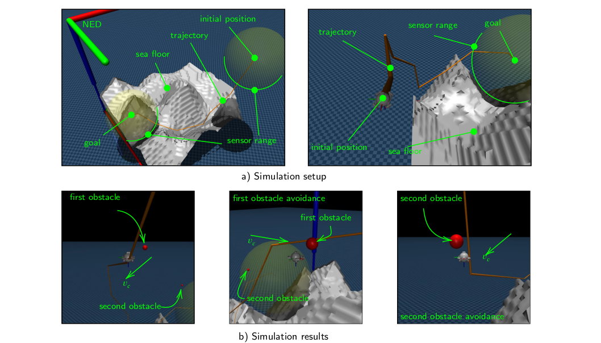

resources
video illustations


abstract
This paper presents a comprehensive framework for glocal trajectory generation with real-time tracking control for a group of Autonomous Underwater Vehicles (AUVs) equipped with distributed sensors. A two-stage approach is proposed to maximize the underwater area coverage of sensor systems while ensuring network connectivity between AUVs and free collision with terrains and floating obstacles. At the global level, a heuristic algorithm named Global Trajectory to Maximize Coverage (GT-MC) is introduced, which generate trajectory to optimize the final AUVs distribution. After that, the trajectory is further optimized to produce the final set of waypoints for the AUVs group. At the local level, a safety-critical trajectory generation method is developed by using a Model Predictive Control (MPC) scheme for a virtual AUV system with Control Barrier Functions (CBF) as constraints for floating obstacle avoidance. The generated trajectories are tracked by the actual AUVs using a classical Sliding Mode Controller (SMC) combined with a thruster force allocation optimizer for the robustness. The complete framework is validated via simulation studies using an open-source advanced physics tool called MuJoCo. The suggested methodology can facilitate the autonomy, scalability, and safety of sensor-AUVs distribution missions, making it a promising tool for intelligent marine sensing and monitoring.
[Description] Study’s main results illustration. First of all, by using the input terrain, a robot-sensor distributed map as well as the trajectories of the robot-sensor nodes are generated. The robots are controlled to track the above-generated trajectories in order to go to the desired positions. If obstacles that hinder the AUV are found, a local path is generated for obstacle avoidance.
global path generation algorithm

Sensors distribution and correspond trajectories in three study cases. All three scenarios reaches up to over 80 percentage of coverage ratio. In study case 1, AUV team travels total 836 m in over 250 time steps, which is 500 m shorter than the unoptimized path and 300 m longer than the sum of straight-line distances. Furthurmore, in the second case, the total travel distance of the group is 300 m just 150 m longer than the sum of straight paths. Finally, AUV team covers the tunnel in nearly 300 time steps, moving a total distance of 300m, which reduces by over 600 m compared to the case without trajectory optimization.
local path generation architecture

Block diagram of the MPC-CBF framework for obstacle avoidance with virtual model-based prediction. The predicted model is integrated using RK4 over the MPC horizon \(\Delta t_{\mathrm{mpc}}\) to compute future virtual states while considering obstacle constraints. The MPC solver generates reference trajectories that are fed into a nominal controller, which operates over a smaller control loop interval \(\Delta t\).
simulation setup

Overview of the hierarchical control architecture for AUV navigation. The global path is generated offline and provided as a reference to the MPC solver for local path planning, which operates in the outer loop. A virtual model is used to predict a new reference trajectory. Then, it is passed to a Sliding Mode Controller (SMC) and a force allocation block running in the inner control loop. The control signal is applied to the MuJoCo-based AUV model, which includes hydrodynamic effects.
advanced simulation results
[Description] Trajectory tracking and obstacle avoidance performance at different time instances (0.5s, 3.0s, 6.5s, 8.0s, and 9.5s). Top row: 2D plots showing the reference trajectory, predicted reference, and actual response with circular obstacles. Bottom row: corresponding 3D simulation using MuJoCo.

[Description] The simulation results present a series of snapshots of the AUV’s behavior at several time instances: 2s, 5s, 12s, and 14s. These snapshots demonstrate the AUV’s ability to follow the example global path while dynamically reacting to nearby obstacles. At each stage, the AUV closely follows the global path as well as maintaining a heading direction aligned with the trajectory.

[Description] It is easy to observe that at the initial time, the AUV is stable at the origin of the NED coordinate with a balanced orientation. The AUV avoids the first obstacle by decreasing the depth. After passing the first obstacle, the AUV still tends to return to the origin. Before being stable at the origin, the second obstacle comes. With the proposed control strategy for obstacle avoidance, the second one could be avoided easily. Thus, the AUV could avoid the obstacles and threats while maintaining balancing at a predefined position.

[Description] In this simulation case, a trajectory from the generated trajectory of Section 3 is selected for individual AUV tracking. It shows the simulation setup and the simulation results. First, the simulation setup subfigures illustrate the initial position of the AUV, which is selected randomly, and the goal position, which depends on the terrain and integrated sensor properties. Besides, the terrain, an example sea floor, and the generated global trajectory are also depicted in the MuJoCo windows.
citation
@misc{vu2025glocal,
title={Glocal Trajectories Generation with Tracking Control for Integrated-Sensors AUVs Distribution},
author={Vu, Duc Cuong and Tran, Son and Nguyen, Tung Lam and Hoang, Duc Chinh},
year={2025},
howpublished={\url{https://github.com/cuong-vd/AUV-ODIN-mujoco}},
note={Accessed: 2025-05-16}
}